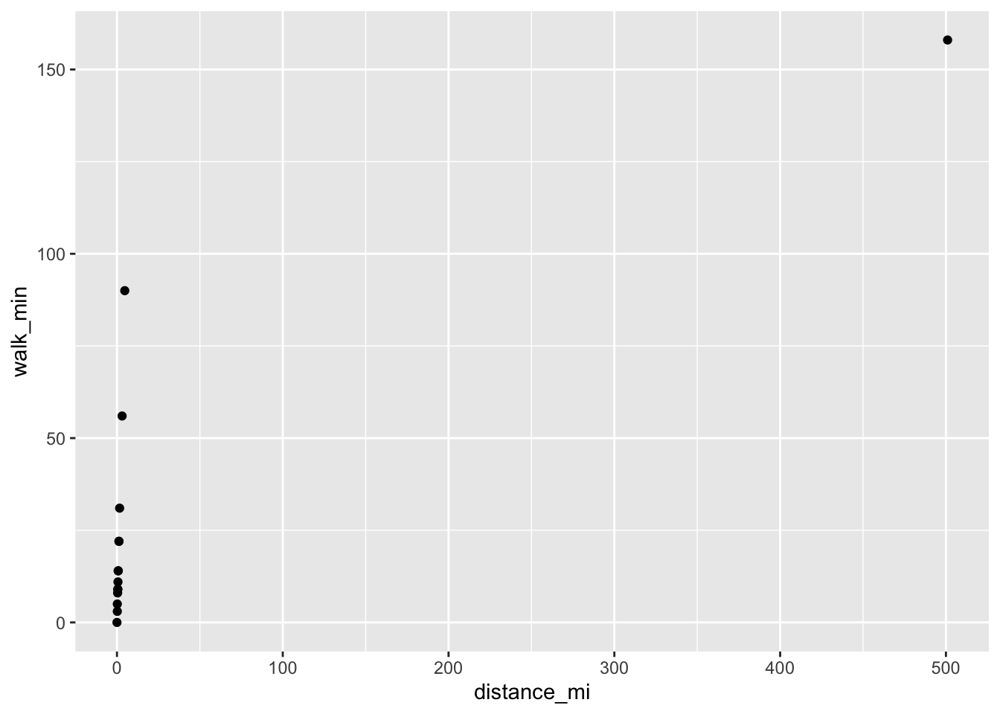
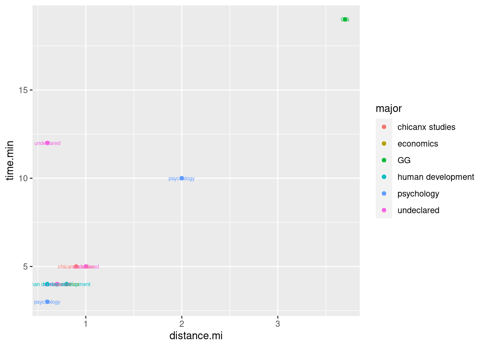
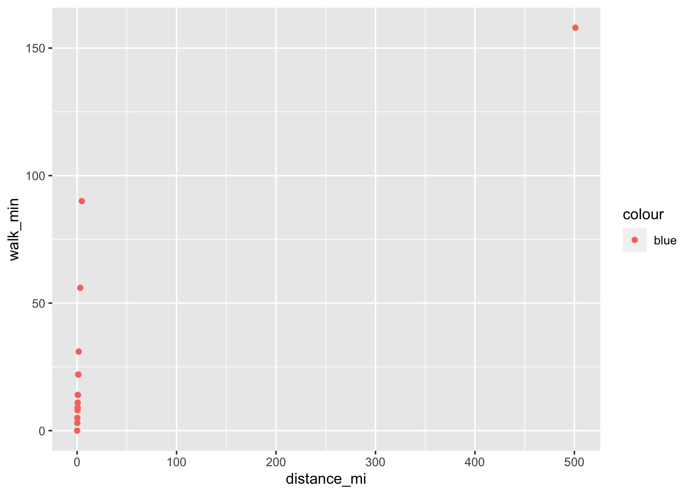
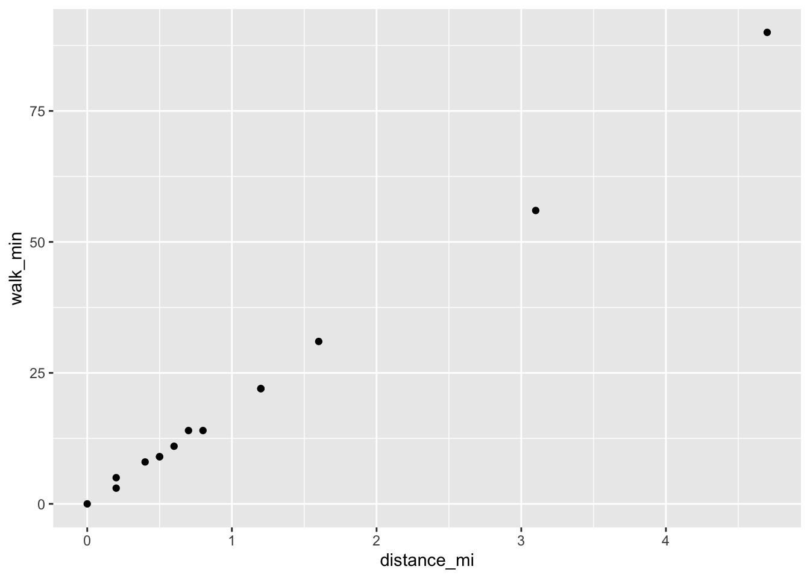
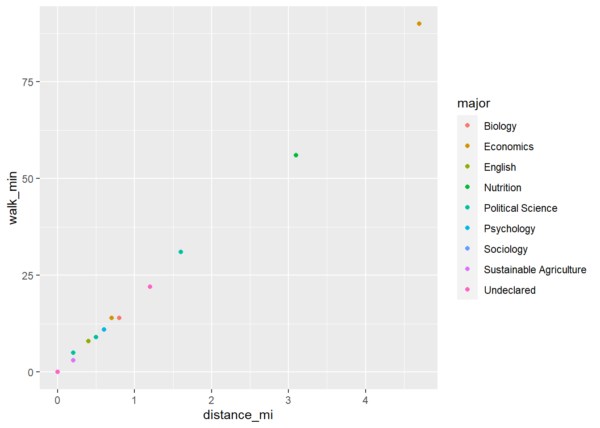
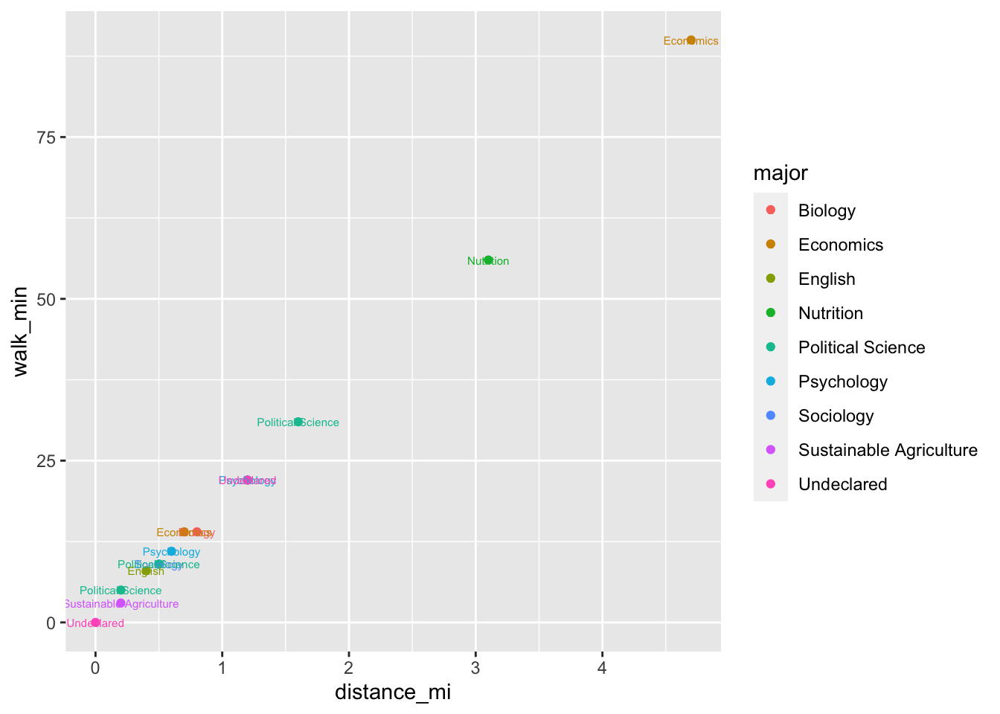
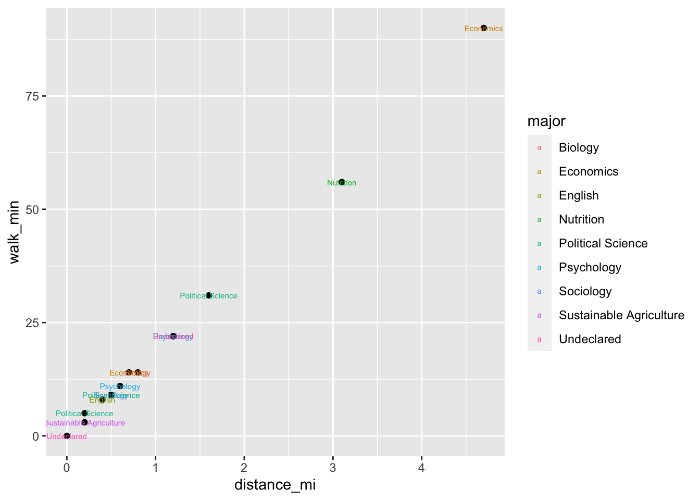
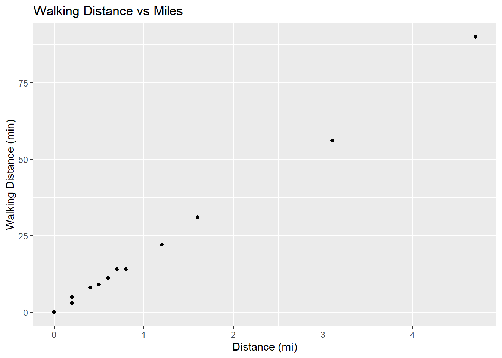
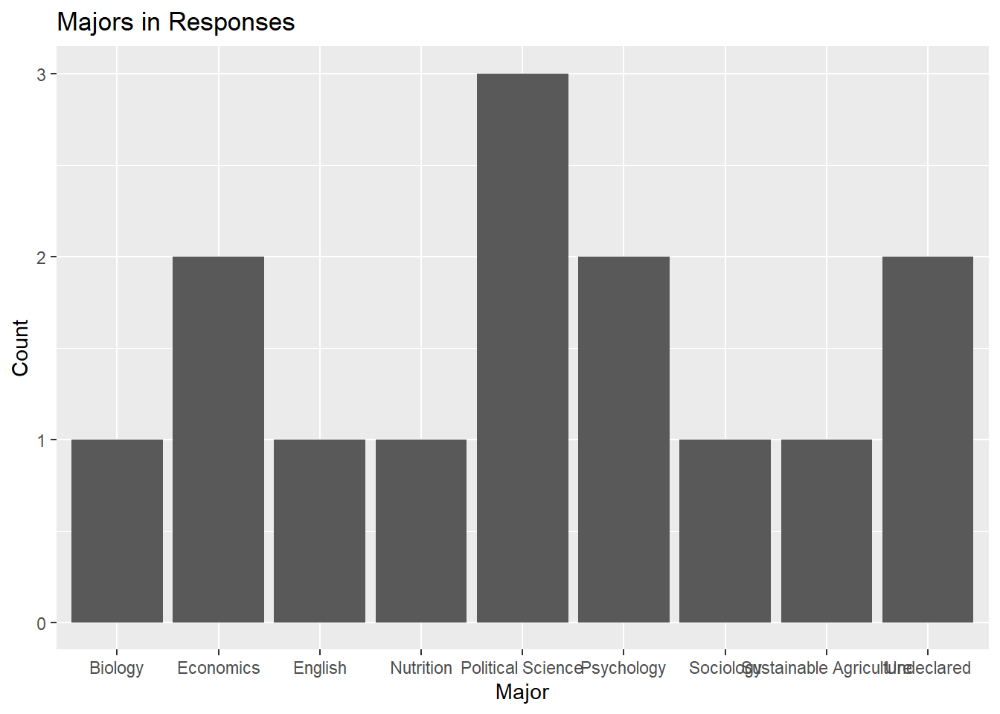

15 Data Visualization
After this lesson, you should be able to:
- Explain the difference between strings and factors
- Convert strings to factors
- Explain the grammar of graphics
- With the ggplot2 package:
- Make various kinds of plots
- Save plots
- Choose an appropriate kind of plot based on the data
15.1 Factors
A feature is categorical if it measures a qualitative category. For
example, the genres rock, blues, alternative, folk, pop are
categories.
R uses the class factor to represent categorical data. Visualizations and
statistical models sometimes treat factors differently than other data types,
so it’s important to make sure you have the right data type. If you’re ever
unsure, remember that you can check the class of an object with the class
function.
When you load a data set, R usually can’t tell which features are categorical.
That means identifying and converting the categorical features is up to you.
For beginners, it can be difficult to understand whether a feature is
categorical or not. The key is to think about whether you want to use the
feature to divide the data into groups. For example, if we want to know how
many songs are in the rock genre, we first need to divide the songs by genre,
and then count the number of songs in each group (or at least the rock
group).
As a second example, months recorded as numbers can be categorical or not, depending on how you want to use them. You might want to treat them as categorical (for example, to compute max rainfall in each month) or you might want to treat them as numbers (for example, to compute the number of months time between two events). The bottom line is that you have to think about what you’ll be doing in the analysis. In some cases, you might treat a feature as categorical only for part of the analysis.
Let’s think about which features are categorical in the favorite places data set from an earlier lesson. There’s a copy of the data in an RDS file on Canvas. We can load the data with:
favs = readRDS("data/fav_places.rds")
str(favs)## 'data.frame': 15 obs. of 7 variables:
## $ raw_description: chr "Mandro - Shaved Ice!" "Cruess Hall (the design building)" "The ARC" "Probably the CoHo. I like the croissants." ...
## $ location : chr "Mandro" "Cruess Hall" "ARC" "CoHo" ...
## $ address : chr "Mandro Teahouse, 1260 Lake Blvd, Davis, CA 95616" "Cruess Hall, 375 California Ave, Davis, CA 95616" "UC Davis Activities and Recreation Center, 760 Orchard Rd, Davis, CA 95616" "UC Davis Activities and Recreation Center, 760 Orchard Rd, Davis, CA 95616" ...
## $ bike_min : num 16 3 4 2 3 1 4 3 0 7 ...
## $ walk_min : num 56 11 14 5 9 3 14 9 0 22 ...
## $ distance_mi : num 3.1 0.6 0.8 0.2 0.5 0.2 0.7 0.5 0 1.2 ...
## $ major : chr "Nutrition" "Psychology" "Biology" "Political Science" ...The numeric columns in this data set (bike_min, walk_min, and
distance_mi) are all quantitative, so they’re not categorical. That leaves
the character columns.
The raw_description and address columns mostly have unique entries. This is
a sign that they wouldn’t make good categorical features, because if we use a
column of unique entries to make groups, each group will only have one element!
So we can rule these out as categorical. They are textual data.
That leaves us with the major and location columns. It’s easy to imagine
grouping the survey responses by major, we can say major is categorical. For
location, it’s not as clear. The locations are:
table(favs$location)##
## Arboretum ARC CoHo Cruess Hall Disneyland
## 2 2 1 1 1
## iTea Mandro MU PES Shields Library
## 1 1 1 1 1
## Tennis Courts Walker Hall West Village
## 1 1 1So there are a couple of locations that aren’t unique, but most of them are.
For this data set, we probably shouldn’t treat location as categorical
because the groups wouldn’t be interesting. However, if we had more survey
responses (or more at each location) it might make sense to do so.
Let’s convert the major column to a factor. To do this, use the factor
function:
factor(favs$major)## [1] Nutrition Psychology Biology
## [4] Political Science Sociology Sustainable Agriculture
## [7] Economics Political Science Undeclared
## [10] Psychology Undeclared Economics
## [13] Political Science English Economics
## 9 Levels: Biology Economics English Nutrition Political Science ... Undeclaredfavs$major = factor(favs$major)Notice that factors are printed differently than strings.
The categories of a factor are called levels. You can list the levels with
the levels function:
levels(favs$major)## [1] "Biology" "Economics"
## [3] "English" "Nutrition"
## [5] "Political Science" "Psychology"
## [7] "Sociology" "Sustainable Agriculture"
## [9] "Undeclared"Factors remember all possible levels even if you take a subset:
favs$major[c(1, 2)]## [1] Nutrition Psychology
## 9 Levels: Biology Economics English Nutrition Political Science ... UndeclaredThis is another way factors are different from strings. Factors “remember” all possible levels even if they aren’t present. This ensures that if you plot a factor, the missing levels will still be represented on the plot.
You can make a factor forget levels that aren’t present with the droplevels
function:
first3 = favs$major[1:3]
droplevels(first3)## [1] Nutrition Psychology Biology
## Levels: Biology Nutrition Psychology15.2 R Graphics Overview
There are three popular systems for creating visualizations in R:
- The base R functions (primarily the
plotfunction) - The lattice package
- The ggplot2 package
These three systems are not interoperable! Consequently, it’s best to choose one to use exclusively. Compared to base R, both lattice and ggplot2 are better at handling grouped data and generally require less code to create a nice-looking visualization.
The ggplot2 package is so popular that there are now knockoff packages for other data-science-oriented programming languages like Python and Julia. The package is also part of the Tidyverse. Because of these advantages, we’ll use ggplot2 for visualizations in this and all future lessons.
15.3 The Grammar of Graphics
ggplot2 has detailed documentation and also a cheatsheet.
The “gg” in ggplot2 stands for grammar of graphics. The idea of a grammar of graphics is that visualizations can be built up in layers. In ggplot2, the three layers every plot must have are:
- Data
- Geometry
- Aesthetics
There are also several optional layers. Here are a few:
| Layer | Description |
|---|---|
| scales | Title, label, and axis value settings |
| facets | Side-by-side plots |
| guides | Axis and legend position settings |
| annotations | Shapes that are not mapped to data |
| coordinates | Coordinate systems (Cartesian, logarithmic, polar) |
15.3.1 Making a Plot
As an example, let’s plot the favorite places survey data. First, we need to load ggplot2. As always, if this is your first time using the package, you’ll have to install it. Then you can load the package:
# install.packages("ggplot2")
library(ggplot2)What kind of plot should we make? It depends on what data we want the plot to show. Let’s make a plot that shows the distance in miles (from the library) against the walking time in minutes for each place in the data. Both the distance and the walking time are recorded as numbers. A scatter plot is a good choice for displaying two numeric features. Later we’ll learn about other options, but for now we’ll make a scatter plot.
Layer 1: Data
The data layer determines the data set used to make the plot. ggplot and most other Tidyverse packages are designed for working with tidy data frames. Tidy means:
- Each observation has its own row.
- Each feature has its own column.
- Each value has its own cell.
Tidy data sets are convenient in general. A later lesson will cover how to make an untidy data set tidy. Until then, we’ll take it for granted that the data sets we work with are tidy.
To set up the data layer, call the ggplot function on a data frame:
ggplot(favs)
This returns a blank plot. We still need to add a few more layers.
Layer 2: Geometry
The geometry layer determines the shape or appearance of the visual elements of the plot. In other words, the geometry layer determines what kind of plot to make: one with points, lines, boxes, or something else.
There are many different geometries available in ggplot2. The package provides
a function for each geometry, always prefixed with geom_.
To add a geometry layer to the plot, choose the geom_ function you want and
add it to the plot with the + operator:
ggplot(favs) + geom_point()## Error: geom_point requires the following missing aesthetics: x and yThis returns an error message that we’re missing aesthetics x and y. We’ll
learn more about aesthetics in the next section, but this error message is
especially helpful: it tells us exactly what we’re missing. When you use a
geometry you’re unfamiliar with, it can be helpful to run the code for just the
data and geometry layer like this, to see exactly which aesthetics need to be
set.
As we’ll see later, it’s possible to add multiple geometries to a plot.
Layer 3: Aesthetics
The aesthetic layer determines the relationship between the data and the geometry. Use the aesthetic layer to map features in the data to aesthetics (visual elements) of the geometry.
The aes function creates an aesthetic layer. The syntax is:
aes(AESTHETIC = FEATURE, ...)The names of the aesthetics depend on the geometry, but some common ones are
x, y, color, fill, shape, and size. There is more information about
and examples of aesthetic names in the documentation.
For example, if we want to put the distance_mi feature on the x-axis, the
aesthetic layer should be:
aes(x = distance_mi)In the aes function, column names are never quoted.
Unlike most layers, the aesthetic layer is not added to the plot with the +
operator. Instead, you can pass the aesthetic layer as the second argument to
the ggplot function:
ggplot(favs, aes(x = distance_mi, y = walk_min)) + geom_point()
If you want to set an aesthetic to a constant value, rather than one that’s data dependent, do so outside of the aesthetic layer. For instance, suppose we want to make the points blue:
ggplot(favs, aes(x = distance_mi, y = walk_min)) + geom_point(color = "blue")
If you set an aesthetic to a constant value inside of the aesthetic layer, the results you get might not be what you expect:
ggplot(favs, aes(x = distance_mi, y = walk_min, color = "blue")) + geom_point()
This plot also demonstrates the importance of visualization. We can see that one of the survey response distances is around 500 miles, which is probably erroneous. Before we continue, let’s remove all responses that are more than 100 miles from campus:
favs = favs[favs$distance_mi <= 100, ]Per-geometry Aesthetics
When you pass an aesthetic layer to the ggplot function, it applies to the
entire plot. You can also set an aesthetic layer individually for each
geometry, by passing the layer as the first argument in the geom_ function:
ggplot(favs) + geom_point(aes(x = distance_mi, y = walk_min))
This is really only useful when you have multiple geometries. As an example, let’s color-code the points by major:
ggplot(favs, aes(x = distance_mi, y = walk_min, color = major)) +
geom_point()
Now let’s also add labels to each point. To do this, we need to add another geometry:
ggplot(favs, aes(x = distance_mi, y = walk_min, color = major, label = major)) +
geom_point() + geom_text(size = 2)
Where we put the aesthetics matters:
ggplot(favs, aes(x = distance_mi, y = walk_min, label = major)) +
geom_point() + geom_text(aes(color = major), size = 2)
Layer 4: Scales
The scales layer controls the title, axis labels, and axis scales of the plot.
Most of the functions in the scales layer are prefixed with scale_, but not
all of them.
The labs function is especially important, because it’s used to set the title
and axis labels:
ggplot(favs, aes(x = distance_mi, y = walk_min)) + geom_point() +
labs(title = "Walking Distance vs Miles", x = "Distance (mi)",
y = "Walking Distance (min)")
15.3.2 Saving Plots
In ggplot2, use the ggsave function to save the most recent plot you created:
ggsave("scatter.png")The file format is selected automatically based on the extension. Common formats are PNG and PDF.
The Plot Device
You can also save a plot with one of R’s “plot device” functions. The steps are:
- Call a plot device function:
png,jpeg,pdf,bmp,tiff, orsvg. - Run your code to make the plot.
- Call
dev.offto indicate that you’re done plotting.
This strategy works with any of R’s graphics systems (not just ggplot2).
Here’s an example:
# Run these lines in the console, not the notebook!
jpeg("scatter.jpeg")
ggplot(favs, aes(x = distance_mi, y = walk_min)) + geom_point()
dev.off()15.3.3 Example: Bar Plot
Let’s say we want to plot the number of responses for each major. A bar plot is an appropriate way to represent this visually.
The geometry for a bar plot is geom_bar. Since bar plots are mainly used to
display frequencies, the geom_bar function automatically computes frequencies
when given mapped to a categorical feature. So we can write:
ggplot(favs, aes(x = major)) + geom_bar() +
labs(title = "Majors in Responses", x = "Major", y = "Count")
To prevent geom_bar from computing frequencies automatically, set stat = "identity". This is mainly useful if you want to plot quantities you’ve
computed manually on the y-axis.
15.4 Designing a Visualization
What plot is appropriate?
| Variable | Versus | Plot |
|---|---|---|
| categorical | bar, dot | |
| categorical | categorical | bar, dot, mosaic |
| numerical | box, density, histogram | |
| numerical | categorical | box, density, ridge |
| numerical | numerical | line, scatter, smooth scatter |
If you want to add a:
- 3rd numerical variable, use it to change point/line sizes.
- 3rd categorical variable, use it to change point/line styles.
- 4th categorical variable, use side-by-side plots.
Also:
Always add a title and axis labels. These should be in plain English, not variable names!
Specify units after the axis label if the axis has units. For instance, “Height (ft).”
Don’t forget that many people are colorblind! Also, plots are often printed in black and white. Use point and line styles to distinguish groups; color is optional.
Add a legend whenever you’ve used more than one point or line style.
Always write a few sentences explaining what the plot reveals. Don’t describe the plot, because the reader can just look at it. Instead, explain what they can learn from the plot and point out important details that are easily overlooked.
Sometimes points get plotted on top of each other. This is called overplotting. Plots with a lot of overplotting can be hard to read and can even misrepresent the data by hiding how many points are present. Use a two-dimensional density plot or jitter the points to deal with overplotting.
For side-by-side plots, use the same axis scales for both plots so that comparing them is not deceptive.